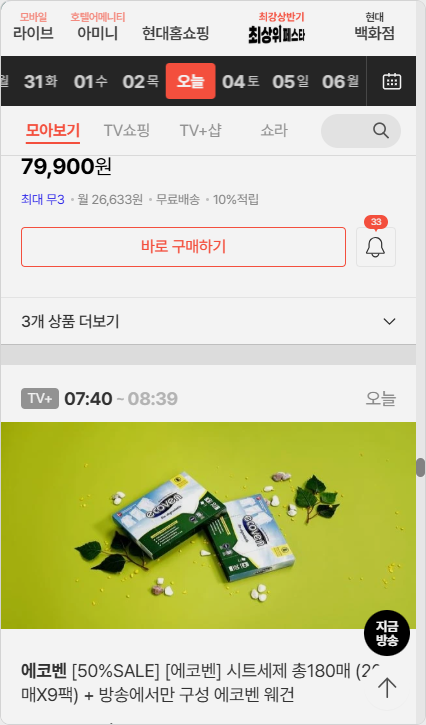
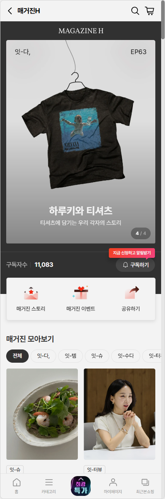
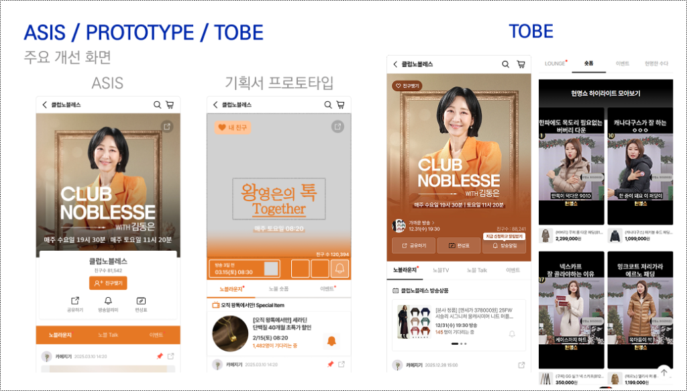
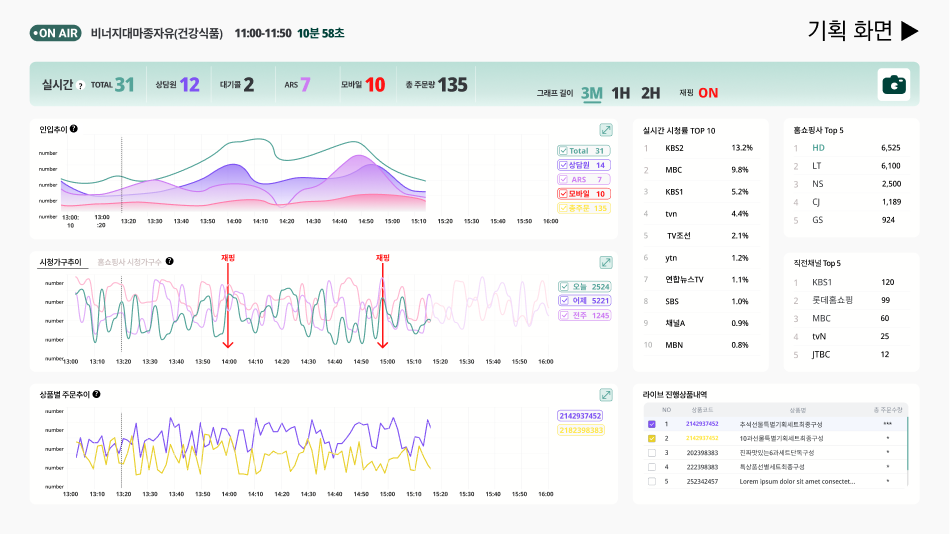
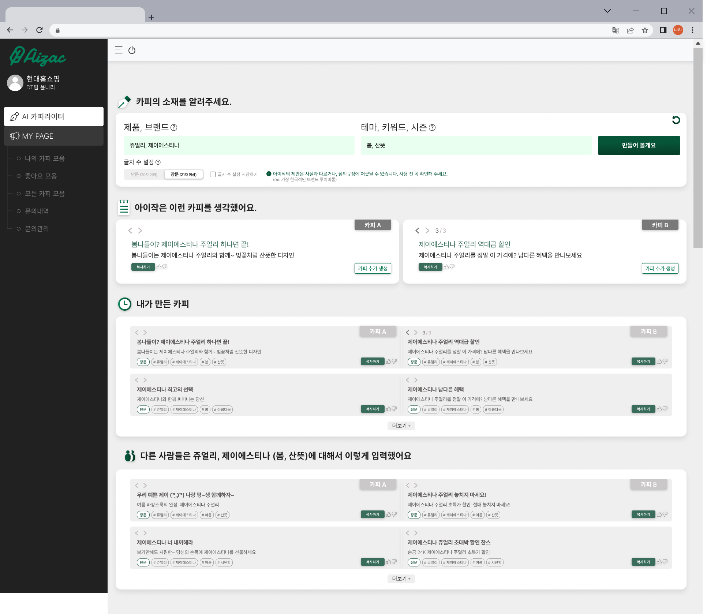
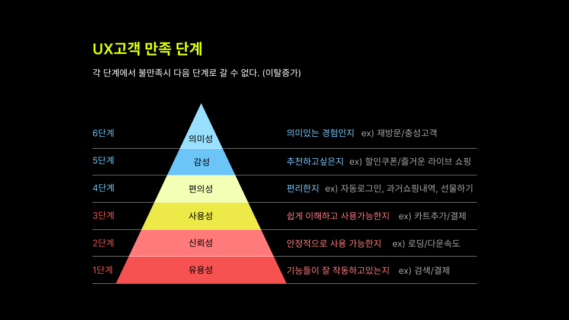
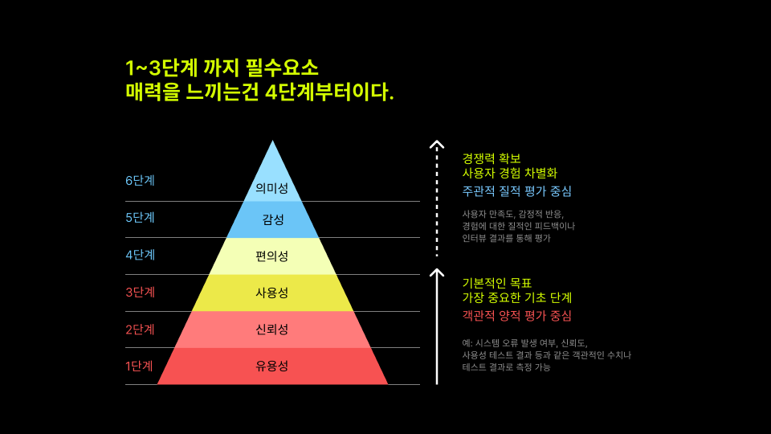
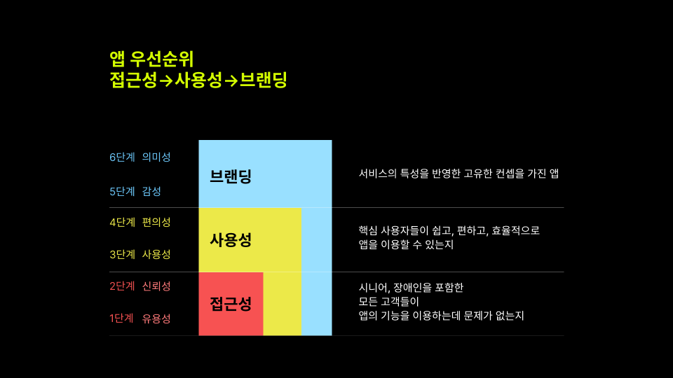

Product Operations Manager
단순한 화면 개선을 넘어, 고객 경험(UX)과 비즈니스 운영(Ops)을 연결하여
비즈니스의 성장을 가속화하는 '최적의 운영 시스템'을 설계합니다.
현대홈쇼핑 B2C 플랫폼에서 4년간 프로덕트 기획 및 운영 고도화를 이끌어 왔습니다.
고객의 사용성 결함을 해결하는 동시에, 내부 조직의 리소스를 최적화하여
팀이 '본질적인 문제'에만 집중할 수 있는 환경을 만드는 데 집중하고 있습니다.
데이터로 문제를 정의하고, 가설 검증(A/B Test)을 통해 확신을 얻으며,
시스템화(Automation)를 통해 임팩트의 지속성을 확보하는 것이 저의 핵심 강점입니다.
고객 여정(User Journey)의 병목을 해결하고, 실무자의 효율을 높이는 CMS 및 데이터 컨트롤 타워 시스템을 구축하고 있습니다.
PROJECT 01
4060 핵심 고객의 '탐색 피로도'를 제거하여 결제 전환율 14% 향상
고연령층 고객의 탐색 패턴을 분석한 결과, 불필요한 정보 위계로 인해 상품 발견까지의 결제 동선이 지나치게 길다는 점을 발견했습니다. 정보 구조(IA)를 1-Depth로 재구성하고, 시간대별 큐레이션을 도입하여 고객이 원하는 상품에 도달하는 비용을 최소화했습니다.

PROJECT 02
에디토리얼 매거진의 시스템화를 통한 운영 생산성 60% 향상

매 기획전마다 발생하던 디자이너와 개발자의 리소스 낭비를 해결하기 위해 '모듈형 CMS 템플릿'을 구축했습니다. 비전문 에디터도 고품질 페이지를 즉시 발행할 수 있게 됨으로써, 발행 주기를 단축하고 다양한 콘텐츠 실험을 통해 평균 체류시간을 비약적으로 연장시켰습니다.
PROJECT 03
단순 구매 채널을 넘어선 '소셜 라운지' 구축으로 재방문 MAU 15% 성장
전통적인 커머스 게시판의 한계를 넘어 숏폼 중심의 버티컬 피드 UI를 도입했습니다. 관심사 기반의 소통과 게이미피케이션(Gamification) 요소를 설계하여 고객의 심리적 소속감을 높였으며, 마케팅 예산 없이도 MAU가 스스로 성장하는 리텐션 루프를 완성했습니다.

PROJECT 04
데이터 파편화를 해결하여 장애 대응 리드타임을 제로화로 개선

파편화된 방송, 물류, 트래픽 지표를 하나의 '컨트롤 타워'로 통합했습니다. 선제적 장애 대응 체계를 마련하여 불확실성을 통제하고, 실무 스태프와 전략팀이 동일한 시각 지표를 공유함으로써 의사결정 속도를 비약적으로 높였습니다.
PROJECT 05
반복적 가공 업무를 기술로 스케일링하여 기획의 본질적 가치 확보
상품 설명 타이핑 등 단순 반복 업무를 사내 CMS에 내장된 LLM이 대체하도록 설계했습니다. 브랜드 페르소나를 유지하는 원클릭 카피라이팅 시스템을 통해 기획자의 창의적인 리소스를 보존하고, 전반적인 운영 생산성을 혁신했습니다.

DATA & RESEARCH
정량적 로그와 정성적 리서치를 교차 검증하여 기획의 근거를 마련합니다.
사용자 인터뷰를 통해 5070 세대가 겪는 핵심 결함이 '불안감'임을 도출하고 이를 해결할 UI 원칙을 정립했습니다.
시니어 유저는 결제 전 상품평에 대한 의존도가 2.2배 높으며, 신뢰 확보를 위한 추가 조작이 이탈의 주범임을 발견했습니다.
도출된 인사이트를 바탕으로 실제 프로토타입을 제작, 사용성 테스트를 거쳐 최적의 레이아웃을 확정했습니다.



단순한 UI 전문가가 아닙니다. 비즈니스의 구조를 이해하고,
데이터로 임팩트를 증명하는 Product Operations 파트너가 되겠습니다.